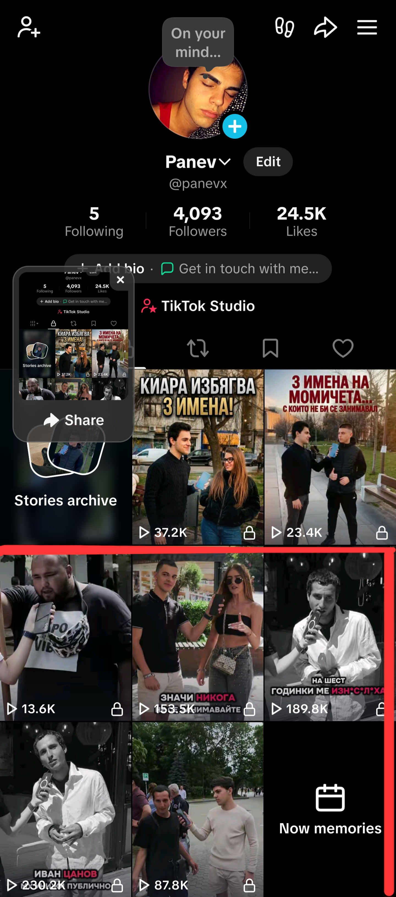

George PanevГеорги Панев
I build software prototypes, lead small technical teams, and grow audiences online. Based in Sofia, in my final year of high school.
Изграждам софтуерни прототипи, ръководя малки технически екипи и развивам аудитории онлайн. От София, последна година в гимназията.
Open to internships & collaborationsОтворен за стажове и сътрудничество
Selected workИзбрани проекти
-
2025
AnimalSync
Technical lead & developer · Junior Achievement
Технически ръководител и разработчик · Junior Achievement
A student-built pet-monitoring concept: smart-collar tracking, vet access, and a lost-pet SOS network. I shipped the working prototype under a tight deadline.
Ученическа концепция за проследяване на домашни любимци: умен нашийник, достъп до ветеринари и SOS мрежа за изгубени животни. Изградих работещия прототип в кратък срок.
Qualified for the JA National Finals Класиран за Националния финал на JACase studyКазус
Origin
The idea came out of a workshop run by EUIPO and the Bulgarian Patent Office on intellectual property and sustainable business. Our class 11G team at 2 SU "Acad. Emiliyan Stanev" had about 90 minutes to invent a company.
My role
I wasn't the founder of the concept. I was the technical lead and main developer. The plan was a native Android app in Kotlin, but there wasn't time to do that well, so I switched to an HTML prototype that showed the whole product and was ready to present.
The product
- Health tracking from an ESP32 collar: sleep, steps, temperature, stress, heart rate.
- Weather-aware tips for dressing a pet in harsh conditions.
- Vet map of nearby clinics for emergencies.
- SOS network that alerts nearby users and vets when a pet goes missing.
- Shared access so a walker or sitter can trigger SOS too.
Outcome
We qualified for the JA National Finals but didn't compete. The date clashed with our Erasmus+ trip to Croatia.
Произход
Идеята се роди на уъркшоп на EUIPO и Патентното ведомство на България за интелектуална собственост и устойчив бизнес. Нашият екип от 11Г клас в 2 СУ „Акад. Емилиян Станев“ имаше около 90 минути да измисли компания.
Моята роля
Не бях автор на концепцията. Бях технически ръководител и основен разработчик. Планът беше нативно Android приложение на Kotlin, но нямаше време да се направи добре, затова преминах към HTML прототип, който показваше целия продукт и беше готов за представяне.
Продуктът
- Здравни показатели от нашийник с ESP32: сън, стъпки, температура, стрес, пулс.
- Съвети според времето за обличане на любимеца при тежки условия.
- Карта на ветеринари наблизо за спешни случаи.
- SOS мрежа, която известява потребители и ветеринари наоколо при изгубен любимец.
- Споделен достъп, за да може гледач да задейства SOS.
Резултат
Класирахме се за Националния финал на JA, но не участвахме. Датата съвпадна с пътуването ни по Erasmus+ в Хърватия.
-
2025–26
Invest Sofia
Intern → marketing contributor
Стажант → сътрудник в маркетинга
Started with a 64-hour internship at Sofia's municipal investment agency and came back in 2026 to work on digital communications and outreach that helps bring investment to the city.
Започнах с 64-часов стаж в Столичната агенция за инвестиции и се върнах през 2026 г. да работя по дигитални комуникации и кампании за привличане на инвестиции в града.
-
2025
TikTok account revivalСъживяване на TikTok профил
Content strategy experiment
Експеримент със стратегия за съдържание
Took a 3-year-old account that had gone quiet, switched it to a completely different niche, and grew it on content strategy alone, with no paid promotion.
Взех неактивен 3-годишен профил, смених нишата му изцяло и го развих само със стратегия за съдържание, без платена реклама.
676,000+ organic views in 5 days 676 000+ органични гледания за 5 дниSee analyticsВиж статистиката

-
Jun 2026юни 2026Erasmus+ STEM exchange, CroatiaErasmus+ STEM обмен, ХърватияRepresented my school on a 5-day ICT/STEM mobility at Gimnazija Metković.Представих училището си на 5-дневна ИКТ/STEM мобилност в Gimnazija Metković.School announcementПубликация на училището
-
Oct 2025окт. 2025IP training, EUIPO & BG Patent OfficeОбучение по ИС, EUIPO и Патентно ведомствоTrademarks, industrial design, and IP in sustainable business. This is where AnimalSync started.Търговски марки, промишлен дизайн и ИС в устойчивия бизнес. Оттук започна AnimalSync.School announcementПубликация на училището
SkillsУмения
Building with AI
Разработка с ИИ
- LLM workflows & prompting
- Rapid prototyping
- HTML, CSS, JavaScript
- AI-assisted debugging
- LLM процеси и промптиране
- Бързо прототипиране
- HTML, CSS, JavaScript
- Дебъгване с ИИ
Systems & Android
Системи и Android
- Linux (Ubuntu, CachyOS)
- Tails, Kali Linux
- Custom ROMs, KernelSU, Magisk
- Performance & thermal tuning
- Linux (Ubuntu, CachyOS)
- Tails, Kali Linux
- Custom ROM, KernelSU, Magisk
- Настройка на производителност
Growth & content
Растеж и съдържание
- Account revival strategy
- Retention analytics
- Cross-platform content
- OBS & streaming setup
- Стратегия за съживяване на профили
- Анализ на задържането
- Кросплатформено съдържание
- OBS и стрийминг
ContactКонтакт
Have a project, an internship, or something you want built? Email is the fastest way to reach me.
Имате проект, стаж или нещо, което искате да бъде изградено? Най-бързо ще ме намерите по имейл.
iamgeorgepanev@gmail.com